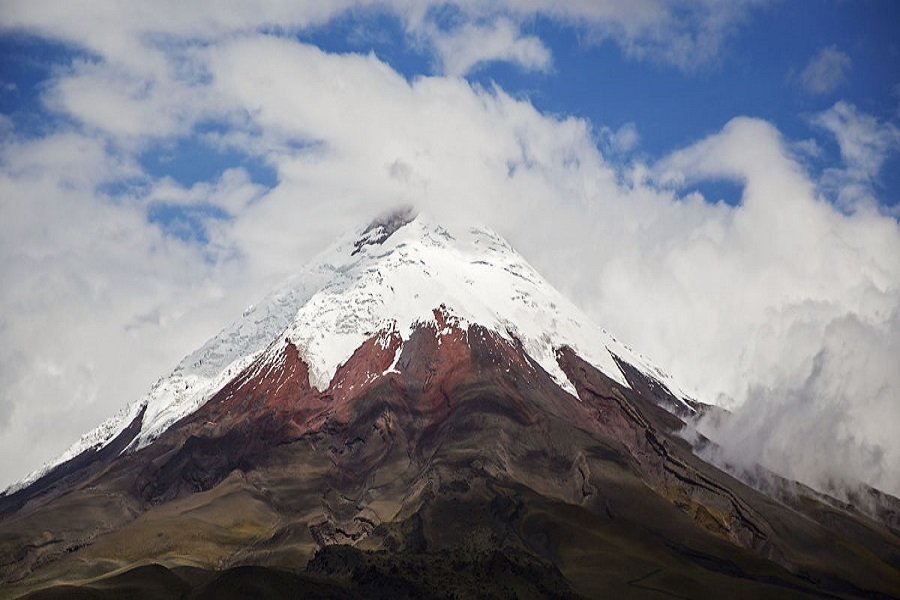

Las erupciones históricas del volcán cotopaxi.

Desde que se tienen registros históricos, el volcán Cotopaxi ha tenido 5 periodos eruptivos: 1532-1534, 1742-1744, 1766-1768, 1853-1854 y 1877-1880. Algunos de los productos generados en estas erupciones son similares entre sí mientras que otros son diferentes, especialmente los productos arrojados por los eventos de 1532-1534, precisamente durante la Conquista Incásica. En esta erupción se destacan los grandes bloques que fueron lanzados y forman hoy parte de la secuencia que se observa en el camino al Refugio, por el flanco norte del volcán. En otras capas dejadas por erupciones posteriores hay una gran presencia de piedra pómez y escoria. La semana pasada dos miembros del área de vulcanología del IGEPN trabajaron en los depósitos recientes con el afán de entender los principios de cada fase eruptiva y aplicar dichos conocimientos para estar preparados ante una futura erupción.